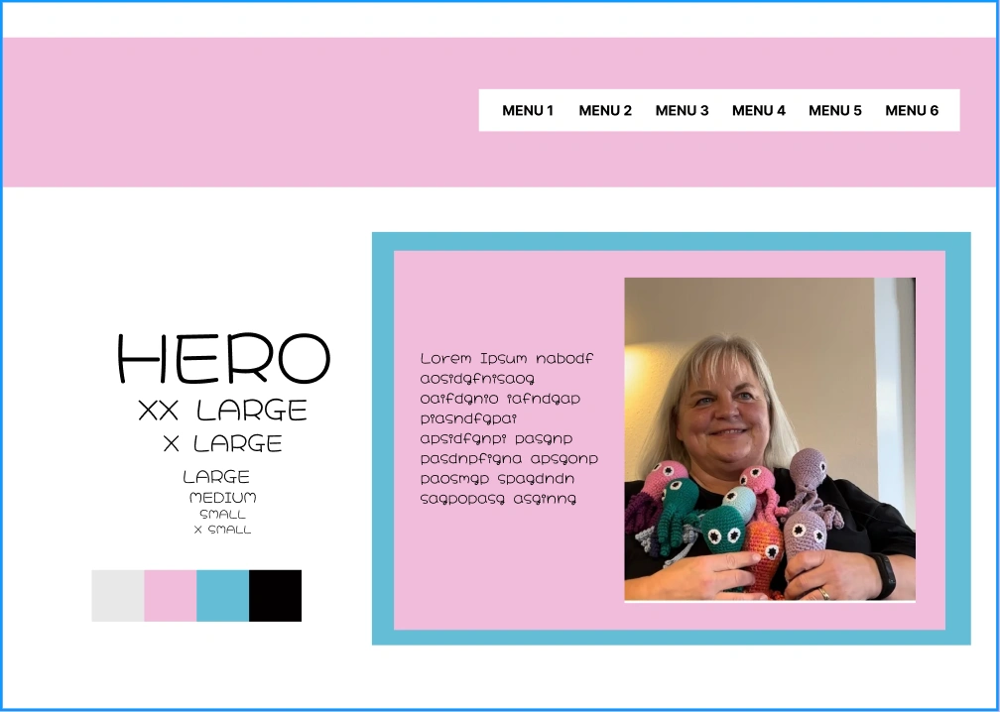
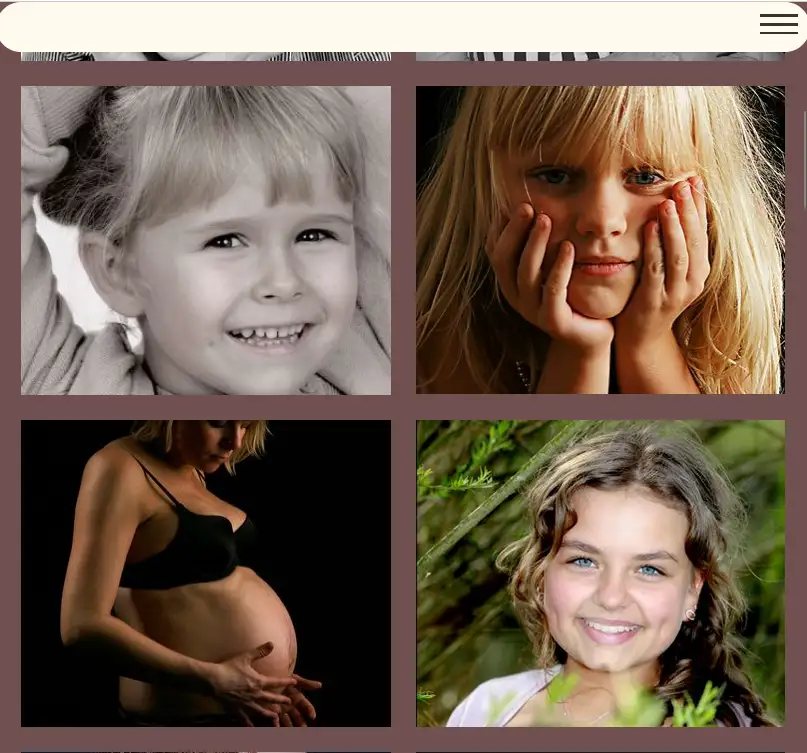

I dette tema lærte jeg om indholdsproduktion. Vi brugte smartphone
kameraer til optagelse af video og ekstern lyd. Så brugte jeg Premier
Pro og Audition til redigering. Vi arbejdede også med vektorgrafik
(LottieFiles). Dette tema var delt op i Passionssitet og
Virksomhedssitet.

SPRUTTEAMBASSADØREN
Ovenover ses det første styletile, som er til passionssitet og det
andet styltile, som er til virksomhedssitet. Vi fandt ret hurtigt
vores interview-person til Passionssitet, som var Pernille, der
lavede hæklede sprutter til hospitaliserede børn. Vi interviewede
Pernille på film og lavede b-rolls. Da vi skulle redigere videoen,
gjorde vi det hver for sig. Jeg brugte Premier Pro. Jeg sørgede for
at lyden fra den eksterne kilde og videoen matchede, ved at synce i
programmet. Jeg lærte meget om Github i både Passionssitet og
Virksomhedssitet.
VIRKSOMHEDSSITET
Til virksomhedssitet valgte vi min mors firma, Storke Foto. Vi
startede med at analysere Rikkes eget site, som var meget
modernistisk og mørkt. Vi så at der var inkonsistens mellem
skrifttyper, og det boksede layout. Vi interviewede hende, og
forstod at sitet var lavet i 2003. Hun fortalte at nøgleordene til
hendes firma er nærhed og tryghed og personlig relation til den der
får taget billeder. Efter interviewet blev der lavet styletiles,
hvor vi valgte det, der er øverst på siden. Det er stadig
modernistisk, men med varmere farver.

HVAD JEG LÆRTE
Jeg lærte super meget om filmiske virkemidler og b-rools såsom
over-the-shoulder og perspektiv shots. Jeg lærte også meget om SCRUM,
som jeg er blevet super glad for. Det er en metode til at gå i gang
med det arbejde der skal laves. Man skriver en backlog, to do, doing
og done, og så inddeler man opgaverne ud på de forskellige poster. Jeg
lærte også om Premier Pro og hvordan man syncer video med ekstern lyd.
Jeg har også lært noget om måder at interviewe på, både igennem
passionsvideoen og virksomhedssitet.